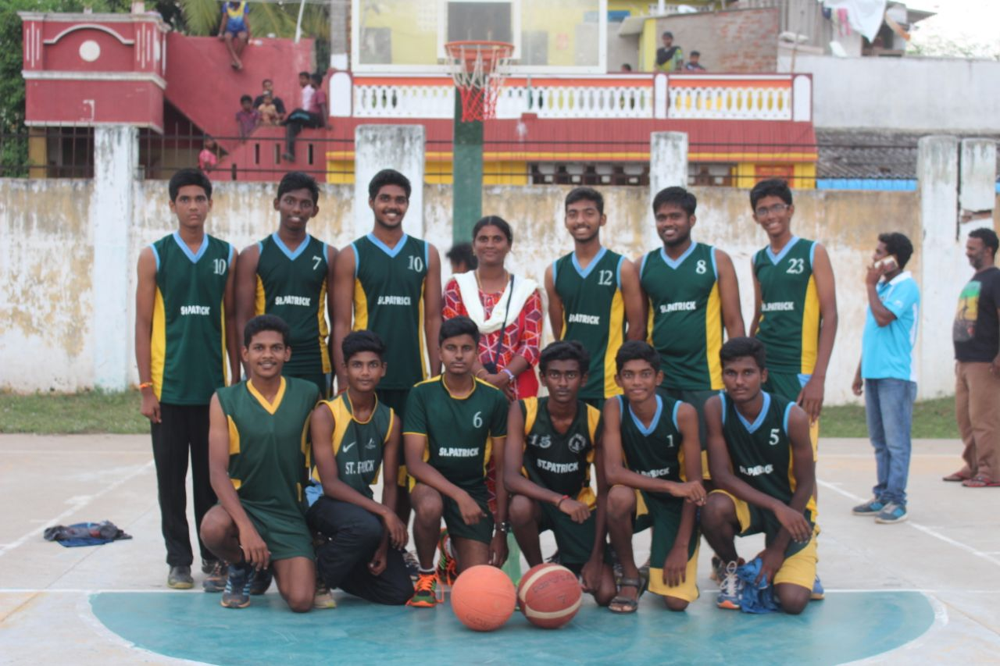
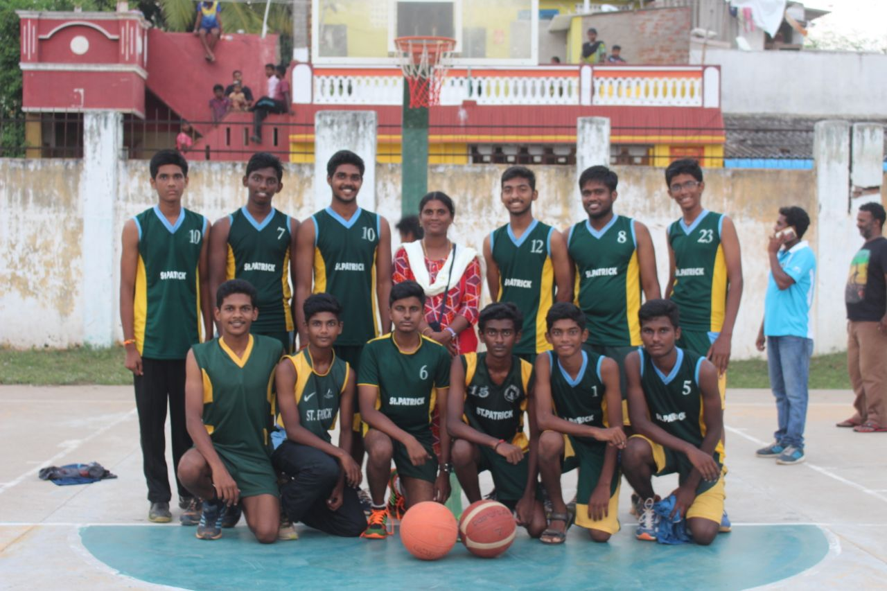

I joined football when i was studying 4th std.
My coach JOSEPH sir trained us.
I made many friends there and enjoyed with them.
If not for KAMESH, I never would have entered sports.
We won couple of interschool prizes in football.
After 2 years when i was studying in 6th std, my friend Gogul
joined Atheletics.
It provoked my interested in Atheletics.
I wanted to join him so i did.
I participated in Open State Meet in 6th for the event 100m
and won 2nd place.
Rest in Histroy.
1st video will play automatically.
Take time to view all videos.
These are some of my winning moments in
Athletics in Interschool and Statemeet.
 

I also participated in Interschool Basketball. We won 3rd place when i was studying in 10th Std.
I also won 1st place in chess interschool competition when i was studying in 12th.